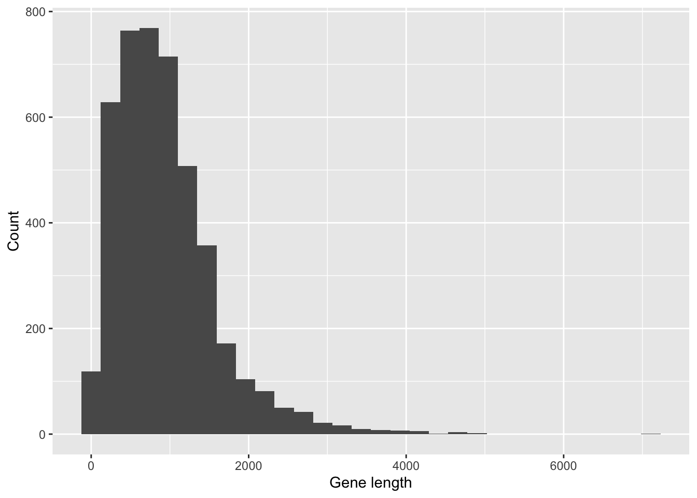
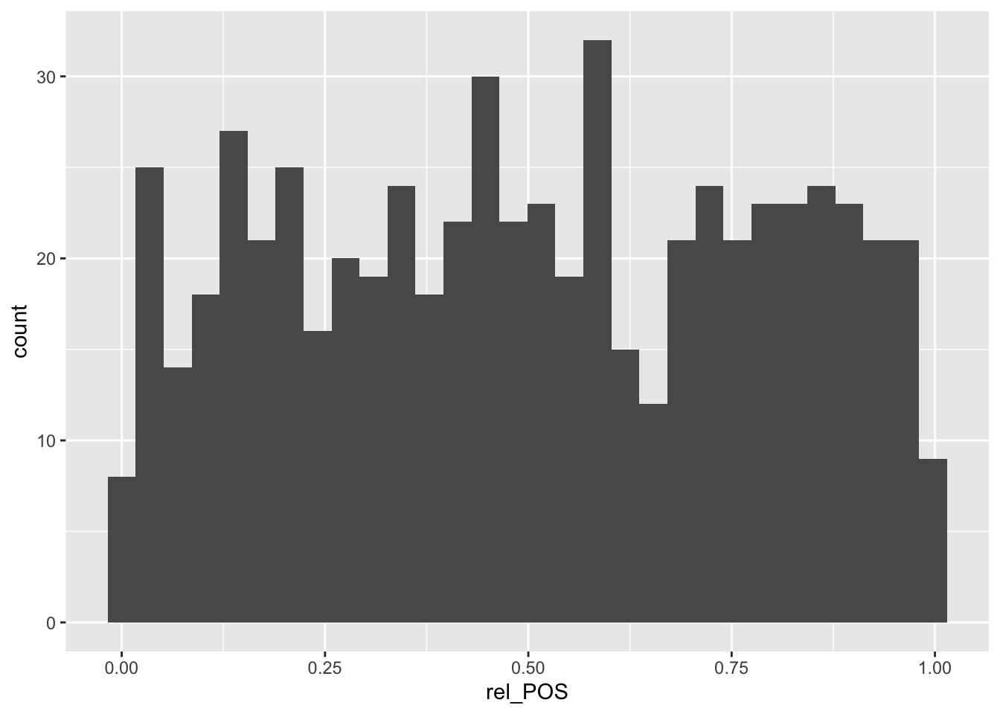
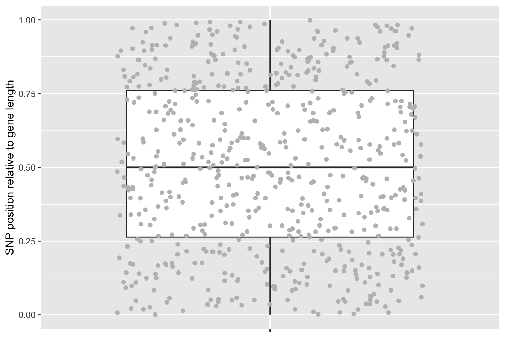
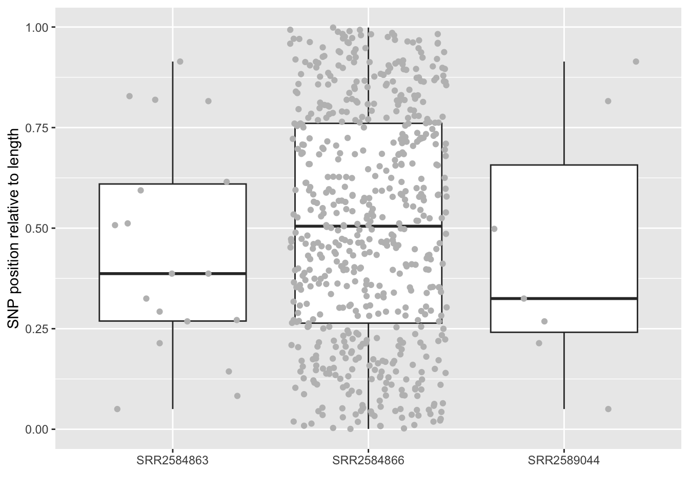

install.packages("plyr")R Loops

1 Load libraries
Install a new package
Load libraries
library("dplyr")
library("tidyr")
library("ggplot2")
library("plyr")
library("Rmisc")2 What are loops?
Loops are used in computer languages to repeat the same task many times, typically across files, or lines or sections within a data set.
For example, you could write some code to perform variant calling that maps the raw sequences from a sample against the reference sequence to generate a .vcf file. You can loop the same code across many samples without the need to run each code separately. Most of the time, this kinds of loop is done in the Linus environment.
Here is an example that occurs more often within R. You may want to apply the same function across all rows in a dataframe. This is a loop that we have already used before using mutate.
Let’s first make a dataframe with one Group column and two values columns V1 and V2.
set.seed(1) # this will allow all our "random" data to be the same
test_df = data.frame(
Group = rep(c("A", "B", "C", "D"), 3), # repeat ABCD 3 times
V1 = sample(1:1000, 12), # randomly sample 12 numbers between 1-1000
V2 = seq(10, 120, 10) # Sequence between 10-120, separated by 10
)
test_df Group V1 V2
1 A 836 10
2 B 679 20
3 C 129 30
4 D 930 40
5 A 509 50
6 B 471 60
7 C 299 70
8 D 270 80
9 A 978 90
10 B 187 100
11 C 307 110
12 D 597 120We can use mutate to “loop” across rows and create a new column V3:
mutate(test_df, V3 = V1 + V2) Group V1 V2 V3
1 A 836 10 846
2 B 679 20 699
3 C 129 30 159
4 D 930 40 970
5 A 509 50 559
6 B 471 60 531
7 C 299 70 369
8 D 270 80 350
9 A 978 90 1068
10 B 187 100 287
11 C 307 110 417
12 D 597 120 717We can also loop across each Group using ddply from the package plyr, which takes in a dataframe and output a dataframe. Arguments for ddply are: dataframe, variable_for_grouping, and a function.
To illustrate, we will apply nrow on each Group:
ddply(test_df, "Group", nrow) Group V1
1 A 3
2 B 3
3 C 3
4 D 3# Remember that we could do that with table(test_df$Group), but it is quite convoluted as we need to convert it to a dataframe and fix the row names.What’s happening behind the scene of ddply(test_df, "Group", nrow) is a process that involves something like this, but in a much more efficient way:
# 1. subset the dataframe "test_df" by Group
tmp_A = filter(test_df, Group=="A")
tmp_B = filter(test_df, Group=="B")
tmp_C = filter(test_df, Group=="C")
tmp_D = filter(test_df, Group=="D")
# 2. apply the function nrow to each subset
tmp_A_nrow = nrow(tmp_A)
tmp_B_nrow = nrow(tmp_B)
tmp_C_nrow = nrow(tmp_C)
tmp_D_nrow = nrow(tmp_D)
# 3. Combine the results from 2 to a dataframe.
data.frame(Group = unique(test_df$Group),
V1 = c(tmp_A_nrow, tmp_B_nrow, tmp_C_nrow, tmp_D_nrow)
)
## Group V1
## 1 A 3
## 2 B 3
## 3 C 3
## 4 D 3
# 4. Cean up all the intermediate files that's made here!
rm(tmp_A_nrow, tmp_B_nrow, tmp_C_nrow, tmp_D_nrow, tmp_A, tmp_B, tmp_C, tmp_D)The figure below well illustrates what’s going on in ddply. The codes showed were functions from the package dplyr that does the same thing that is best used with pipes %>%, but since we are not using pipes, we will stick with the functions in plyr, which could be less efficient in terms of speed when handling large data sets.

Looping (or aggregating) a dataframe is most powerful when it’s combined with custom functions. For example, we can randomly extract a number from each group based on V2.
In this case we can use function(i){…} in the third argument. In the first iteration, i equals to tmp_A_nrow, and in the second iteration, i equals to tmp_B_nrow.
set.seed(1) # Again to ensure that we have the same numbers.
ddply(test_df, "Group", function(i){
sample(i$V2, 1)
}) Group V1
1 A 10
2 B 100
3 C 30
4 D 80If we want use a custom function across row, we can use adply(dataframe, .margins = 1, .fun)
For example, we can get 10 random numbers between V1 and V2 in each row:
set.seed(1)
adply(test_df, 1, function(x){ # You could use something other than i here!
sample(x$V1:x$V2, 10) # It just needs to be consistant here.
}) Group V1 V2 V3 V4 V5 V6 V7 V8 V9 V10
1 A 158 708 328 366 538 567 650 530 240 560
2 B 186 350 89 643 575 195 298 79 354 21
3 C 88 92 110 102 32 86 43 60 90 35
4 D 394 556 683 733 553 892 496 121 541 651
5 A 350 496 380 465 108 488 304 280 317 139
6 B 368 146 217 61 60 369 141 459 176 255
7 C 124 211 277 190 216 197 271 159 150 79
8 D 115 163 223 238 226 122 240 169 126 198
9 A 492 124 128 349 481 121 163 360 403 489
10 B 128 137 154 178 187 145 129 162 173 130
11 C 279 156 138 260 269 284 127 268 225 218
12 D 435 555 597 569 520 192 272 314 482 365We can even create dataframes with function
ddply(test_df, "Group", function(i){
data.frame(N = nrow(i),
max = max(i$V1),
min = min(i$V1),
sd = sd(i$V1),
se = sd(i$V1)/ sqrt(nrow(i)) )
}) Group N max min sd se
1 A 3 978 509 240.5043 138.85524
2 B 3 679 187 246.9764 142.59188
3 C 3 307 129 100.5385 58.04596
4 D 3 930 270 330.0045 190.52821The code above is very similar to the function behind summary_SE() in the package Rmisc that we have seen previously.
summarySE(data = test_df, measurevar = "V1", groupvars = "Group") Group N V1 sd se ci
1 A 3 774.3333 240.5043 138.85524 597.4459
2 B 3 445.6667 246.9764 142.59188 613.5233
3 C 3 245.0000 100.5385 58.04596 249.7516
4 D 3 599.0000 330.0045 190.52821 819.7767Here are some more tutorials about loops in base R and the use of ddply and other functions in plyr.
3 Give it a try!
Write a ddply command to get the mean of V2 by Group.
Code
ddply(test_df, "Group", function(x){
mean(x$V2)
})
## Group V1
## 1 A 50
## 2 B 60
## 3 C 70
## 4 D 80Write a ddply command to get, by Group, the larger value of the sd of V2 and sd of V1
Code
ddply(test_df, "Group", function(x){
max(sd(x$V2), sd(x$V1))
})
## Group V1
## 1 A 240.5043
## 2 B 246.9764
## 3 C 100.5385
## 4 D 330.0045
Now we will go back to the previous variant data from the E. coli evolution experiment to illustrate the use of loops in real analysis. We will load and prepare some raw data and then run a few analysis.
4 Load & prepare data
We may not need to run this if you still have SNP in your workspace from last time.
Code
# reload all data needed here
variants = read.csv(url("https://raw.githubusercontent.com/datacarpentry/genomics-r-intro/main/data/combined_tidy_vcf.csv"))
SNP = filter(variants, REF=="A" | REF=="T" | REF=="G" | REF=="C")Load the E. coli annotation. This is the .gff file where the raw sequences from each samples were aligned against to generate the .vcf files we used last time.
Ecoli_gff = read.delim(url("https://github.com/barricklab/LTEE-Ecoli/raw/master/reference/REL606.gff3") , header=F, comment.char="#", col.names = c("seqid", "source", "type", "start" , "end", "score", "strand", "phase", "attributes")) %>% filter(seqid=="REL606") # the last part filter for just the seqid we want here.Write a code to examine the structure of the dataframe Ecoli_gff:
Code
str(Ecoli_gff)
## 'data.frame': 8894 obs. of 9 variables:
## $ seqid : chr "REL606" "REL606" "REL606" "REL606" ...
## $ source : chr "." "." "." "." ...
## $ type : chr "region" "source" "gene" "CDS" ...
## $ start : int 1 1 190 190 336 336 2800 2800 3733 3733 ...
## $ end : int 4629812 4629812 255 255 2798 2798 3732 3732 5019 5019 ...
## $ score : chr "." "." "." "." ...
## $ strand : chr "+" "+" "+" "+" ...
## $ phase : chr "." "0" "0" "0" ...
## $ attributes: chr "Is_circular=true;Note=Escherichia coli strain REL606." "Name=unknown" "Alias=ECB_00001;ID=ECB_00001;Name=thrL" "Alias=ECB_00001;ID=ECB_00001;Name=thrL;Note=thr operon leader peptide;transl_table=11" ...Write a code to show the unique entries for the column type:
Code
unique(Ecoli_gff$type)
## [1] "region" "source" "gene" "CDS"
## [5] "repeat_region" "fCDS" "rRNA" "tRNA"
## [9] "misc_feature"While there are many types of genomic elements, we are only interested in gene in type.
Write a code to make a new object called Ecoli_gene that has only the entry gene in the column type.
Code
Ecoli_gene = filter(Ecoli_gff, type == "gene")
# check
unique(Ecoli_gene$type)
## [1] "gene"
# this should be true
nrow(Ecoli_gene)==4386
## [1] TRUEWe will need the length of each gene for later analysis. Write a code to overwrite Ecoli_gene with an additional column called length calculated as abs(start - end)+1
Code
Ecoli_gene = mutate(Ecoli_gene, length = abs(start - end)+1)
names(Ecoli_gene)
## [1] "seqid" "source" "type" "start" "end"
## [6] "score" "strand" "phase" "attributes" "length"Plot a histogram of length using geom_histogram(). It’s clear the the lengths of the genes are not equal. This will be important to our anlaysis below.
ggplot(Ecoli_gene, aes(length)) +
geom_histogram() +
labs(x = "Gene length", y = "Count")`stat_bin()` using `bins = 30`. Pick better value with `binwidth`.
5 Analysis
5.1 Question 1: Are SNP positions equally distributed across genes?
To answer this question, we will need the position of a SNP and where this SNP is located relative to the length of the gene. In other words, we will need a relative position that ranges from 0-1: values closer to 0 means that the SNP is located towards the beginning of the gene, while values closer to 1 means that the SNP is located towards the end of the gene. This way, we can compare the position of a SNP across genes of different lengths.
Remember from last time, we loaded a vcf file which had three samples. And we extracted only SNP variants as an object SNP.
Remind ourselves what SNP looks like as a .vcf file:
head(SNP) sample_id CHROM POS ID REF ALT QUAL FILTER INDEL IDV IMF DP
1 SRR2584863 CP000819.1 9972 NA T G 91 NA FALSE NA NA 4
2 SRR2584863 CP000819.1 263235 NA G T 85 NA FALSE NA NA 6
3 SRR2584863 CP000819.1 281923 NA G T 217 NA FALSE NA NA 10
4 SRR2584863 CP000819.1 648692 NA C T 210 NA FALSE NA NA 10
5 SRR2584863 CP000819.1 1331794 NA C A 178 NA FALSE NA NA 8
6 SRR2584863 CP000819.1 1733343 NA G A 225 NA FALSE NA NA 11
VDB RPB MQB BQB MQSB SGB MQ0F ICB HOB AC AN DP4 MQ
1 0.0257451 NA NA NA NA -0.556411 0.000000 NA NA 1 1 0,0,0,4 60
2 0.0961330 1 1 1 NA -0.590765 0.166667 NA NA 1 1 0,1,0,5 33
3 0.7740830 NA NA NA 0.974597 -0.662043 0.000000 NA NA 1 1 0,0,4,5 60
4 0.2680140 NA NA NA 0.916482 -0.670168 0.000000 NA NA 1 1 0,0,7,3 60
5 0.6240780 NA NA NA 0.900802 -0.651104 0.000000 NA NA 1 1 0,0,3,5 60
6 0.9924030 NA NA NA 1.007750 -0.670168 0.000000 NA NA 1 1 0,0,4,6 60
Indiv gt_PL
1 /home/dcuser/dc_workshop/results/bam/SRR2584863.aligned.sorted.bam 121,0
2 /home/dcuser/dc_workshop/results/bam/SRR2584863.aligned.sorted.bam 112,0
3 /home/dcuser/dc_workshop/results/bam/SRR2584863.aligned.sorted.bam 247,0
4 /home/dcuser/dc_workshop/results/bam/SRR2584863.aligned.sorted.bam 240,0
5 /home/dcuser/dc_workshop/results/bam/SRR2584863.aligned.sorted.bam 208,0
6 /home/dcuser/dc_workshop/results/bam/SRR2584863.aligned.sorted.bam 255,0
gt_GT gt_GT_alleles
1 1 G
2 1 T
3 1 T
4 1 T
5 1 A
6 1 AThe vcf file has the position POS of each SNP, but it doesn’t have information on the length of the gene.
The length of each gene was calculated in Ecoli_gene.
head(Ecoli_gene) seqid source type start end score strand phase
1 REL606 . gene 190 255 . + 0
2 REL606 . gene 336 2798 . + 0
3 REL606 . gene 2800 3732 . + 0
4 REL606 . gene 3733 5019 . + 0
5 REL606 . gene 5232 5528 . + 0
6 REL606 . gene 5681 6457 . - 0
attributes length
1 Alias=ECB_00001;ID=ECB_00001;Name=thrL 66
2 Alias=ECB_00002;ID=ECB_00002;Name=thrA 2463
3 Alias=ECB_00003;ID=ECB_00003;Name=thrB 933
4 Alias=ECB_00004;ID=ECB_00004;Name=thrC 1287
5 Alias=ECB_00005;ID=ECB_00005;Name=yaaX 297
6 Alias=ECB_00006;ID=ECB_00006;Name=yaaA 777However, there are no common columns between SNP_SRR2584866 and Ecoli_gene. So, we’ll need to be creative to map the two based on the start/end position in Ecoli_gene
To do that, we will use Ecoli_gene to create a temporary object that has all possible positions in the genome (i.e., from 1 to max(Ecoli_gene$end)). In each row, we’ll include the start position and the length of the gene that is at that POS.
# Use adply to apply a function to each row of a dataframe.
gene_position = adply(Ecoli_gene, 1, # apply by row
.expand = FALSE,
# write a custom function that makes a df
function(i){
data.frame(POS = i$start:i$end,
start = i$start,
length = i$length)
})
head(gene_position) X1 POS start length
1 1 190 190 66
2 1 191 190 66
3 1 192 190 66
4 1 193 190 66
5 1 194 190 66
6 1 195 190 66Now we have POS in both gene_position and SNP.
# checking
nrow(gene_position)
## [1] 4128856
names(gene_position)
## [1] "X1" "POS" "start" "length"
nrow(SNP)
## [1] 702
names(SNP)
## [1] "sample_id" "CHROM" "POS" "ID"
## [5] "REF" "ALT" "QUAL" "FILTER"
## [9] "INDEL" "IDV" "IMF" "DP"
## [13] "VDB" "RPB" "MQB" "BQB"
## [17] "MQSB" "SGB" "MQ0F" "ICB"
## [21] "HOB" "AC" "AN" "DP4"
## [25] "MQ" "Indiv" "gt_PL" "gt_GT"
## [29] "gt_GT_alleles"We only want to keep rows in SNP. that shares with gene_position.
How should we set up left_join to do this?
Code
SNP_gene = left_join(SNP, gene_position, "POS") %>% filter(!is.na(length)) # remove NA in lengthWe will now make a new column called rel_POS that is calculated as (POS-start+1)/length. This is the ratio of the length to the SNP relative to the length of the gene.
SNP_gene = mutate(SNP_gene, rel_POS = (POS-start+1)/length, na.rm = TRUE)We can now use a 1-sample t test to test whether the distribution of rel_POS is deviated from a mean of 0.5 (mu = 0.5).
t.test(SNP_gene$rel_POS, mu = 0.5)
One Sample t-test
data: SNP_gene$rel_POS
t = 0.37023, df = 619, p-value = 0.7113
alternative hypothesis: true mean is not equal to 0.5
95 percent confidence interval:
0.4817635 0.5267102
sample estimates:
mean of x
0.5042369 Remember that the null in this t.test is that the mean of the given data is 0.5. Now that the p value is > 0.05, we have failed to reject the null. This means that the mean of rel_POS is not statistically different from 0.5. We can write a summary statement with statistical support as:
The mean of the relative position of SNPs across genes is not statistically different from 0.5 (t = 0.370, d.f. = 619, p = 0.711). This suggests that SNPs are equally distributed across genes.
Note that there are better ways to test this, for example by testing whether the distribution fits a normal distribution: shapiro.test(SNP_gene$rel_POS), in which the null hypothesis is that the data fits the normal distribution. The data likely will not fit because of kurtosis instead of skewness. See here.
We can visualize the data using a histogram:
ggplot(SNP_gene, aes(rel_POS)) +
geom_histogram() `stat_bin()` using `bins = 30`. Pick better value with `binwidth`.
We can also show it as a boxplot:
# modification is needed as we only have one variable.
ggplot(SNP_gene, aes(y = rel_POS, x = "")) +
geom_boxplot(outlier.shape = NA) + # to make sure outlier are not confused with the points.
geom_jitter(color="grey", height = 0) + # hieght ensures that on the y is jittered
labs(x = "", y = "SNP position relative to gene length")
5.2 Question 2: Does sample affect the distribution of SNPs?
We can answer this easily as SNP includes three sample_id.
unique(SNP$sample_id)[1] "SRR2584863" "SRR2584866" "SRR2589044"Write a code to run an ANOVA with rel_POS as the response and sample_id as predictor:
Code
summary(lm(rel_POS~sample_id, SNP_gene))
##
## Call:
## lm(formula = rel_POS ~ sample_id, data = SNP_gene)
##
## Residuals:
## Min 1Q Median 3Q Max
## -0.50586 -0.23886 -0.00494 0.25357 0.49194
##
## Coefficients:
## Estimate Std. Error t value Pr(>|t|)
## (Intercept) 0.445958 0.067209 6.635 7.09e-11 ***
## sample_idSRR2584866 0.060788 0.068218 0.891 0.373
## sample_idSRR2589044 -0.005164 0.127014 -0.041 0.968
## ---
## Signif. codes: 0 '***' 0.001 '**' 0.01 '*' 0.05 '.' 0.1 ' ' 1
##
## Residual standard error: 0.2851 on 617 degrees of freedom
## Multiple R-squared: 0.001852, Adjusted R-squared: -0.001384
## F-statistic: 0.5723 on 2 and 617 DF, p-value: 0.5646Write some codes to plot the data as a boxplot:
Code
ggplot(SNP_gene, aes(y = rel_POS, x = sample_id)) +
geom_boxplot() +
geom_jitter(color="grey", height = 0) +
labs(x = "", y = "SNP position relative to length")
Based on these data, write a summary statement with statistical support.
Code
# This should be in your chain of thought, but it is NOT a summary statement:
# The null hypothesis for the ANOVA is that the predictor does not affect the distribution of the response.
# Since the p value is larger than 0.05, we have failed to reject the null hypothesis.
# Therefore, the null is true.
# Now this IS the summary statement that you should report in a report:
# Sample ID does not significantly affect the relative position of SNPs across genes (F = 0.572, d.f. = 2 and 617, p= 0.565).
# (generally only 3 sigificant figures are needed)6 Assignment
Apart from the mean, we can also test whether the variability (standard deviation) of rel_POS are different between sample_id.
(1) From SNP_gene, use ddply to get the sd of rel_POS by sample_id. Save the new dataframe as sd_rel_POS
(2) Run a chi-square test to test if the calculated sd (should be called “V1” in sd_rel_POS are 1:1:1 across sample_id (i.e., the default). Write a summary statement with statistic support.
(3) Plot the data
Submission: Once you are done writing your well-annotated code, run everything and copy the code + output in the R console and submit. Plots do not need to be attached.